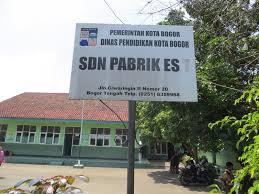
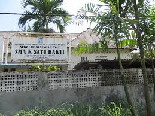
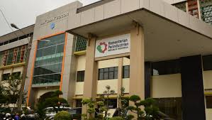

Name : Debora Jennifer Matulessy
Date Of Birth : Bogor, 1 May 2002
Addres : Ciwaringin street Gg.Mesjid Rt 03/09
Sibling : 2 of 2 brother
Religion : Christian
Age : 16
Gender : Female
Instagram : @dbr.jen
Email : deboraj@smakbo.sch.id
Future Goals :
- Graduate from SMAKBO with the good grades
- Get a better job with a high sallary
- Be the nice person for everyone
- Make everyone happy especially my parents
Hobbies :
- Reading Novel

1. SDN Pabrik Es

2. SMPK Satu Bakti

3. SMK-SMAK Bogor

Nama saya Debora Jennifer. Saya biasa dipanggil 'Debo' atau 'Deb'.Saya tinggal di daerah Bogor yaitu Ciwaringin. Saya sekarang bersekolah di SMK-SMAK Bogor dan duduk di kelas 11. Awal mula saya bersekolah di sini karena keinginan saya sendiri yang waktu itu berpikir supaya nanti lulus sekolah bisa langsung bekerja dan mendapatkan penghasilan, saya mencoba ikut jalur prestasi menggunakan raport di SMAKBO dan ternyata saya diterima. Setelah itu jadilah saya bersekolah di SMAKBO
Di SMAKBO saya bertemu dengan teman-teman yang mempunyai lata hidup yang berbeda-beda. Saya kira waktu awal masuk SMAKBO sama dengan sekolah lainnya ternyata saat kelas 10 saya merasa belajar di SMAKBO sangat sulit terutama bagian pelajaran kimia yang benar-benar dipelajari sangat dalam, ternyata di kelas 11 saya merasa pelajaran lebih sulit karena pelajaran kimia di tingkat ini dibagi menjadi beberapa bagian . Di kelas 10 saya sering tidur karena merasa lelah dengan semua pelajaran yang ada. Tidak ada destinasi favorit saya tapi saya hanya menyukai berjalan-jalan kemanapun ibu saya pergi.
Tentang hobi saya saya lebih suka membaca novel genre horor,sci-fic,dan fantasy ketimbang romance. Saya suka membaca novel karena itu bisa melatih imajinasi saya,serta berpikir kritis. Selain novel saya juga suka membaca komik untuk komik saya menyukai semua genre karena komik menyediakan gambar jadi saya tinggal melihat gambar yang ada. Komik yang paling saya suka adalah komik'Miiko'itu adalah komik dari jepang yang mengisahkan seorang anak SD dan kehidupannya. Selain membaca buku saya juga suka makan saya tau jika makan bukanlah hobi melainkan kebutuhan tapi saya menyukai semua makanan yang ada itulah sebabnya saya hobi makan saya tidak pernah memilah-milih makanan asal makanan itu bisa dimakan dan enak di lidah why not?...